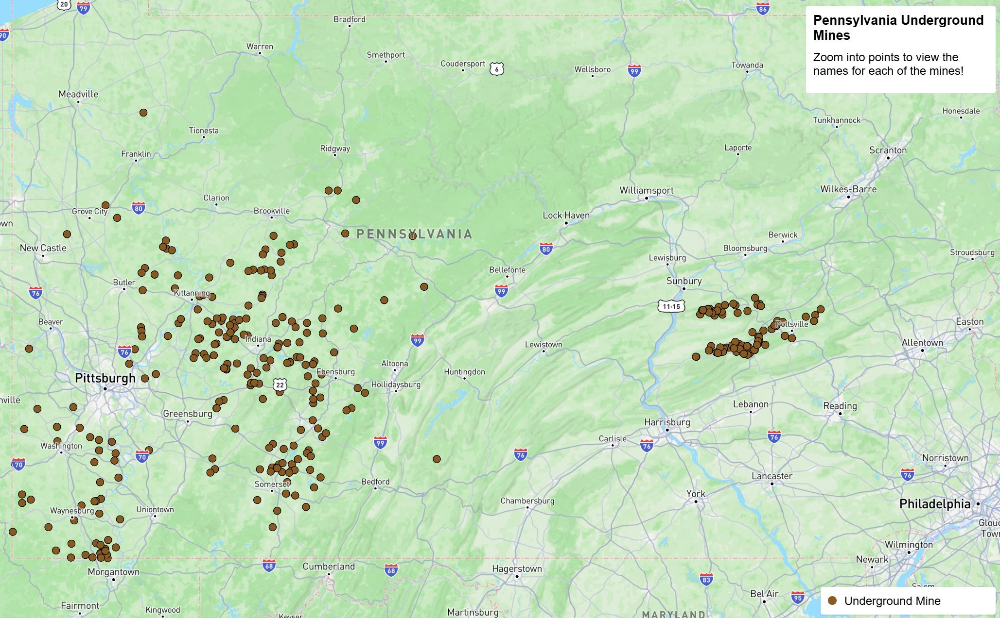

01

An interactive map of underground mine locations across Pennsylvania. Users can click on any mine marker to view the site name in a popup, and zoom in to explore individual locations. A legend is included to help users understand the symbology. The map automatically opens to the bounds of Pennsylvania.
View Map